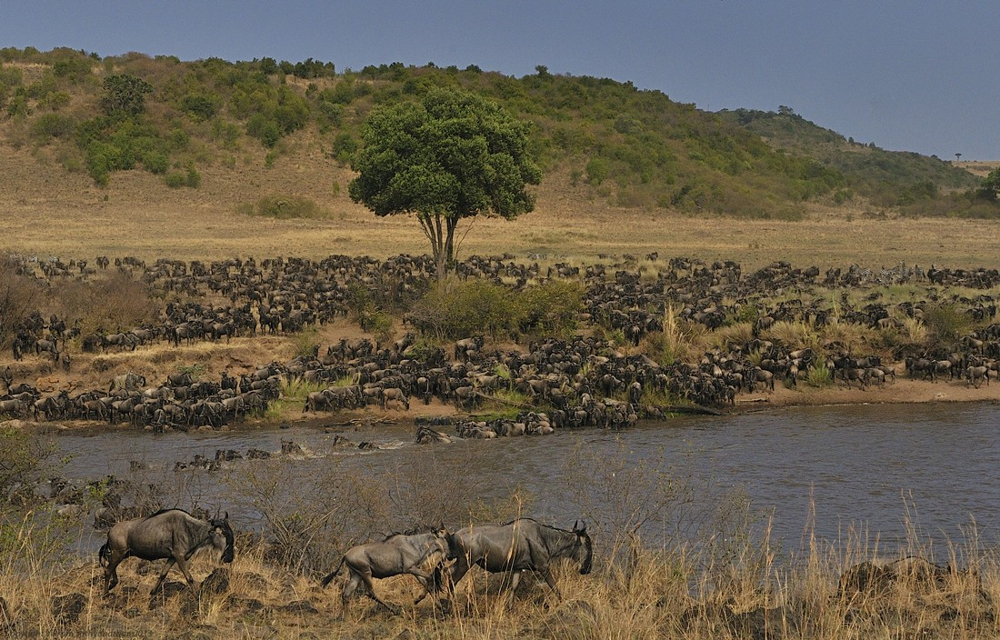

Southwestern Kenya · Safari
Maasai Mara
Open plains, river crossings and long days on safari.
The Mara’s grasslands run into wooded riverbanks and connect with Tanzania’s Serengeti. Give yourself several drives to see the landscape change from the cool of dawn to the last light of the afternoon.

What to experience
On the plains
Watch for lions in the grass and for giraffes and elephants around the acacia woodland. Ask your guide to vary your routes so you can spend time in both open country and riverine habitat.
Along the Mara River
The river draws wildlife year-round. During the seasonal migration, wildebeest may gather on its banks, but crossings depend on the herds and conditions that day.
Planning your stay
Choose where to stay before settling on a road route or airstrip. A few nights give you room for quieter drives and time at camp between outings.
Visitor information from Maasai Mara National Reserve.
In photographs

